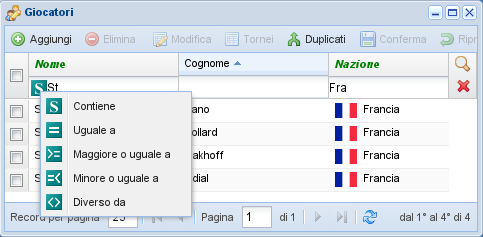

Filtri¶

Il menu di ricerca¶
Sulla destra dei titoli delle colonne ci sono due pulsanti che attivano o disattivano i filtri. Quello con l'icona della lente aggiunge dei campi modificabili sotto i titoli delle colonne dove è possibile inserire un valore che viene utilizzato come filtro sulla colonna. L'altro annulla tutti i filtri.
Come mostrato in figura, tramite il menu sulla sinistra del campo si può scegliere un criterio
diverso, ad esempio per poter selezionare i giocatori nati prima di una certa data. Il criterio
di default è contiene, cioè inserendo la stringa “mat” nel filtro del cognome selezionerà
tutti i giocatori il cui cognome contiene quella stringa, vale a dire sia “Matys” che
“Dematté”, oppure “Zumat”.
È possibile eseguire una ricerca su più colonne contemporaneamente, ad esempio per mostrare
solo i giocatori francesi, selezionando solo il campo nazionalità e immettendo il
testo FRA e magari le iniziali nel campo nome.